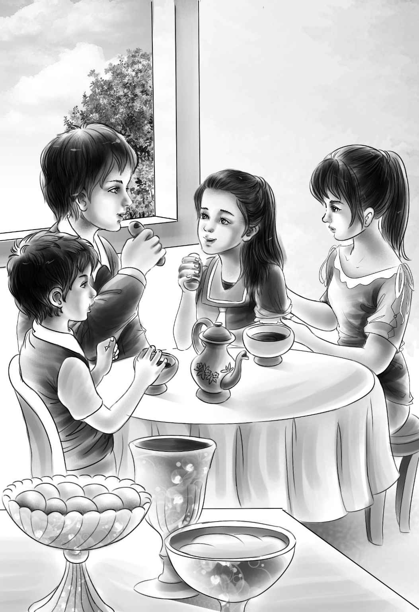

Two days passed before Maggie finally spoke her mind. She was feeling much better now with three delicious meals a day. And she enjoyed having someone to talk to.
Maggie and the two girls were sitting on the back steps，enjoying the cool evening breeze. The dinner dishes were done，and the first stars had come our over the ranch.
“Maybe I haven’t any right to ask，” Maggie began. “But I wonder what your grandfather is going to do about your aunt. She needs some care all the time. You girls can’t stay here all summer.”
“Maybe we can，” said Violet softly. “We love it here，and I think Aunt Jane is used to having us now.”
“There is one thing that’s missing，though，” said Jessie.
“Yes，I know，” said Violet. “We both miss the boys.”
Violet looked very sad.
“Maybe Aunt Jane would let the boys come，too，” said Jessie. “Then it would be perfect.” She looked at her sister.
“Let’s ask her tomorrow，” Violet said.
The two girls went upstairs to bed.
Next morning Jessie took a fine breakfast into her aunt’s room. The little lady began to eat，and Jessie sat down beside the bed.
“We miss Henry and Benny，Aunt Jane，” she began. “Couldn’t we ask them to come for a few days？I’m sure Grandfather would let them come if you were willing.”
“Well，” said her aunt，“I’d agree to that.”
The little lady looked up from her breakfast.
“But I don’t want to see James，remember that！”she said.
“Grandfather is really very nice when you get to know him，” said Jessie.
Aunt Jane gave a short laugh. “Don’t forget that I knew your grandfather long before you did. If these two boys turn out like him，back they go！”
Jessie was sorry to hear her aunt talk like that. She did not answer. It was the best thing she could have done. Miss Jane was beginning to love the smiles on these two young faces.
What could she say to make Jessie happy again？she wondered.
“Tell Benny to bring his dog，” she said.
What a smile came over Jessie’s face！ She did not say that Watch was not Benny’s dog，but hers.
She said，“Oh，that’s wonderful！ Watch will love this ranch！ And we’ll keep him out of your room，I promise.”
“Well，don’t promise that，” said Aunt Jane. “I like dogs in my room if they are good dogs.”
“Watch is a wonderful dog，” said Jessie. “He saved our lives once.”
The girls went to the station and sent their daily telegram. The very next day they got an answer from Benny. His telegram said，“Henry and I will come on the same train you did. Bringing Watch. Bringing you more clothes. Love to Aunt Jane. Benny.”
What a happy family it was when the four children were finally together in Aunt Jane’s kitchen！
“You take the boys right in to see Aunt Jane，”said Jessie，holding Watch by a strap.“I’ll keep Watch with me.”
The boys followed Violet into the bedroom. Aunt Jane was almost sitting up against her pillows. Her blue eyes were very bright.
“Hello，Aunt Jane，” said Benny，going over to the bed. “I’m Benny. And aren’t you a cute little lady！”
Aunt Jane was taken by surprise. She almost smiled.

“And I suppose you are Henry，” she said.
“Yes. We are sorry you are sick，” Henry answered. He hardly knew what to say to this strange woman.
“Who said I was sick？” asked Aunt Jane. “Well，you certainly don’t look like your grandfather.”
“No，I’m afraid not，” said Henry.
“No need to be afraid about that，” answered Aunt Jane. “I’m glad you don’t look like him. And where’s that big dog I’ve heard about？”
“Jessie，bring in Watch，” called Henry.
Everyone watched to see what the dog would do. He walked over to the bed and looked at the little old woman. Then he sat down and put out his paw.
“He wants to shake hands！” cried Benny，delighted. “Shake hands with him，Aunt Jane！You don’t want to hurt his feelings.”
For a minute，the children thought their aunt was angry. But to their surprise，she sat up and shook hands with the dog.
“Good dog，” she said，lying back again.
Watch threw back his head and looked at Jessie. His mouth was open.
“Oh，Aunt Jane，he’s laughing！” cried Benny.“He likes you！”
“Well，well，” said Aunt Jane. “I’m glad the dog likes me，at least. You can go now and eat. And shut the door when you leave. I’m very tired from all the excitement.”
The children went back into the kitchen and sat around the table，talking.
“Isn’t Aunt Jane a surprise？” asked Jessie.
“She certainly is，” said Henry，“but I like her.”
Jessie said，“Just guess what I think. Which one of us will do the most to make Aunt Jane well again？”
And three voices answered together，“Watch！”